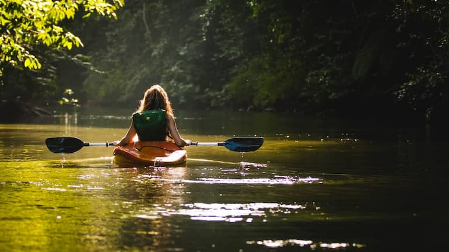
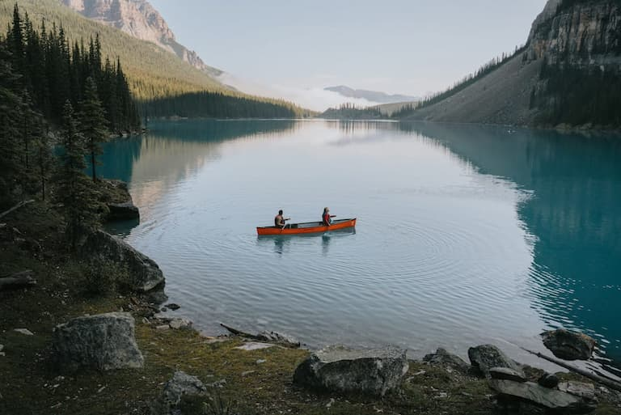
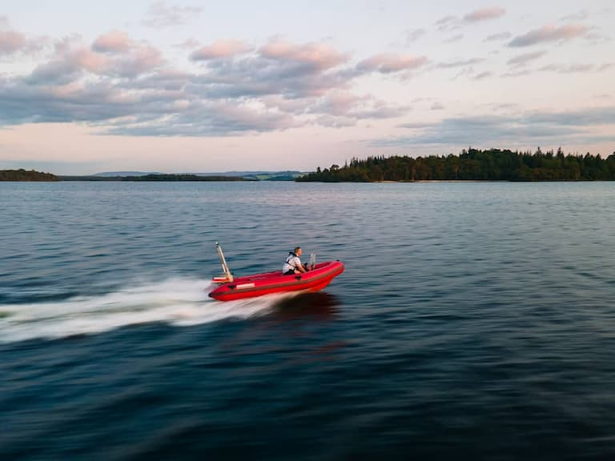

Welcome to Lochquarry Outdoor Centre
Water based activities
Water-based activities all take place on Lochquarry itself..
Kayaking
Have a go at paddling, rolling and rafting in one of our brand new kayaks. Max group size 8. Ages 8+.

Canoeing
Work single-handedly or in pairs to canoe the length of Lochquarry. You can even take a picnic with you and explore some of the Loch’s islands. Max group size 8 boats (up to 16 people). Ages 6+

Powerboating
Take control of one of the Centre’s two RIBs out on Lochquarry and try your hand powerboating. Max group size 6. Ages 12+

The Scouts loved every second of it, especially the powerboating’ − Martin Bainbridge, Scout Leader
Please check the weather: Met Office